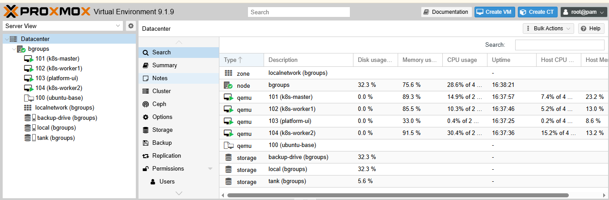
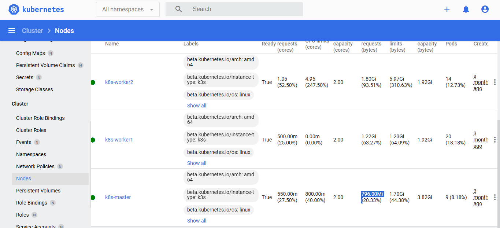
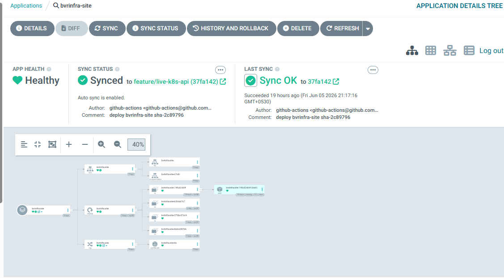
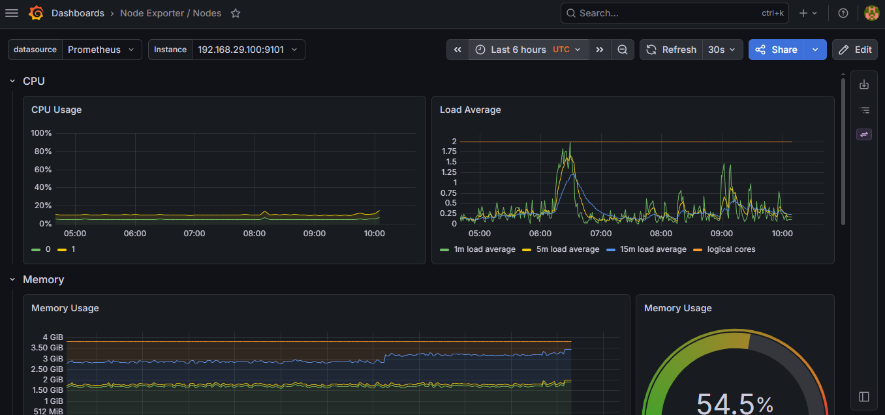
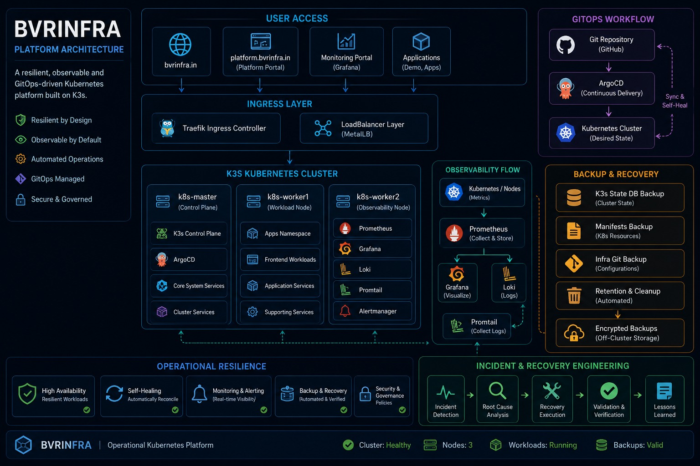

Senior Infrastructure
& Platform Engineer
Virtualisation → Automation → Kubernetes → GitOps → Observability. Self-built 3-node K3s cluster on bare-metal Proxmox; GitOps via ArgoCD; full-stack observability with Prometheus, Grafana & Loki; zero open ports via Cloudflare Tunnel.
Platform Capabilities
Platform Highlights
Every item is running in production on bvrinfra.in
How deployments work
GitOps Delivery Flow
From a Git commit to a running container — fully automated, zero manual steps
Core Stack
Deployed Projects
Three infrastructure platforms running on bvrinfra.in
- Goal: Realistic Kubernetes platform without cloud dependency
- Stack: Proxmox → K3s (3 nodes) → ArgoCD → Traefik + MetalLB → Cloudflare Tunnel
- Result: All workloads Git-managed; TLS-terminated with zero inbound ports exposed
- Goal: Eliminate manual kubectl apply — all state declared in Git
- Stack: GitHub (manifests) → ArgoCD → K3s Deployments → Traefik IngressRoutes
- Result: ArgoCD auto-syncs on commit; drift detected and remediated automatically
- Goal: Full visibility into cluster health, pod resources, and application logs
- Stack: Prometheus · Grafana · Loki + Promtail · Alertmanager — pinned to k8s-worker2
- Result: Unified metrics + logs in Grafana; Alertmanager rules active; no resource contention
Platform Evidence
Real screenshots from the running infrastructure — click to enlarge




Platform Architecture
K3s cluster on Proxmox VE — Cloudflare Tunnel, Traefik + MetalLB, ArgoCD GitOps, full-stack observability.

Traffic & Cluster Flow
Cloudflare Tunnel → Traefik → MetalLB → K3s Pods
Key Design Decisions
No port forwarding. Cloudflare Tunnel keeps the cluster fully firewalled — no public IP exposed.
GitOps-first. Every workload is a Git commit — ArgoCD auto-syncs and self-heals.
Node separation. Observability stack isolated on k8s-worker2 to prevent resource contention.
Full-stack observability. Prometheus + Grafana (metrics), Loki + Promtail (logs), Alertmanager (alerts).
Live Endpoints
How monitoring works
Observability & Incident Response
Two parallel pipelines — metrics and logs — converging on Grafana
Ravi Kishore
Senior Infrastructure & Platform Engineer · 9+ Years · Kubernetes · GitOps · Observability · Automation
- Designed and operated a production-style 3-node K3s platform on Proxmox VE bare metal
- Implemented GitOps delivery using ArgoCD with automated reconciliation and drift remediation — all workloads managed as Git-committed manifests
- Built centralised observability platform using Prometheus (metrics), Grafana (dashboards), Loki + Promtail (log aggregation), and Alertmanager (alert routing)
- Engineered zero-trust external access via Cloudflare Tunnel with Traefik IngressRoutes and MetalLB LoadBalancer — zero open inbound ports
- Isolated observability stack on a dedicated worker node (k8s-worker2) to eliminate resource contention with application workloads
- Administered VMware vSphere environments — VM lifecycle management, snapshot scheduling, host maintenance, and capacity planning
- Managed Windows Server infrastructure: Active Directory, DNS, DHCP, Group Policy, and WSUS across multi-site enterprise environments
- Provisioned and maintained Azure resources; governed hybrid connectivity, subscription policies, and access controls
- Developed PowerShell and Bash automation scripts to reduce manual effort on recurring operational workflows
- Administered Linux servers (RHEL/Ubuntu) — package management, system monitoring, user administration, and service troubleshooting
- Led incident triage, root-cause analysis, and post-incident reporting for production infrastructure events
- Bachelor of Technology (Electronics & Communication Engineering)
- CKA Certification — In Progress
- Microsoft Certified: Windows Server Hybrid Administrator Associate (AZ-800 / AZ-801)
- Cloudflare Zero Trust — Hands-on Implementation Experience
Let's Connect
Open to Platform Engineer, Cloud Infrastructure, Kubernetes, and SRE roles.